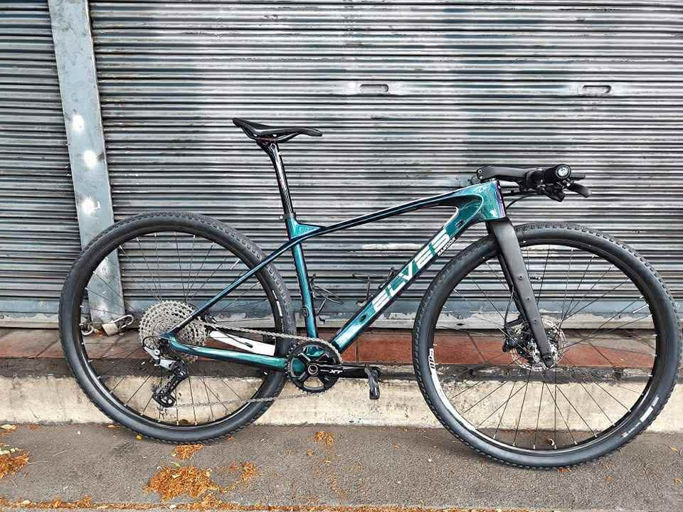
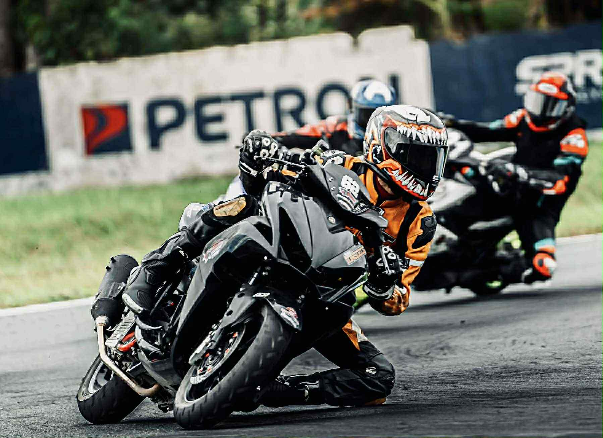

This photo represents confidence in an academic setting. Wearing my school uniform reminds me of my responsibilities as a student and my determination to achieve my goals. I chose this photo because it shows that confidence is not only about appearance but also about believing in my own abilities and working hard to succeed.On second in this picture, I am confidently expressing my personal style. My relaxed pose and casual outfit show that I’m comfortable with who I am. Confidence for me means being proud of myself, not being afraid to express my personality, and standing tall no matter what others think. The photo reflects how I embrace my individuality and carry myself with self-assurance.
My Hobbie


in 3rd picture i also chose this picture because I love motorcycling and racing. Riding a motorcycle gives me a sense of thrill and excitement. It allows me to show focus and determination, especially during races or long rides. This hobby teaches me discipline, concentration, and respect on the road. In my 4th picture i chose this picture because one of my favorite hobbies is cycling. For me, cycling is not just a form of exercise but also a way to strengthen my body and relieve stress. Every time I ride my bike, I feel free and happy while enjoying the surroundings. It also helps me develop discipline and maintain a healthy lifestyle.
I chose this video because I am truly happy that the kid who once only dreamed of racing on the track is now finally able to do it. I also chose it because it’s one of my biggest hobbies something that helps calm me whenever I’m facing problems, what I like to call “throttle therapy.”